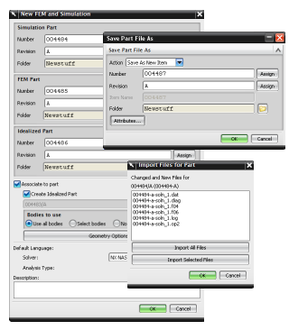

When creating and saving data in Teamcenter Integration mode using Teamcenter for Simulation, be aware of the following differences:
When you create a new FEM or Simulation, you must specify a number and revision for the idealized part, FEM, and Simulation files in the New FEM and Simulation dialog box.
When you save a solved model, you are prompted to import any solver-generated files, as well as any reports. These files are stored as named references in the dataset container under the CAE Analysis item revision.
When you choose File→Save or File→Save As, a Save As dialog box is displayed. Specify the numbers and revisions for the new item revisions for the migrated data. Data stored using the traditional data model is automatically migrated to the Teamcenter for Simulation data model when you save it.
